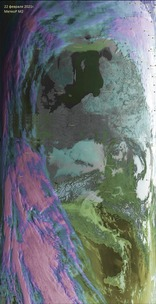
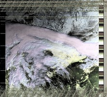
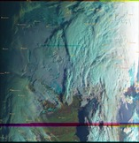
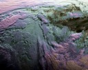
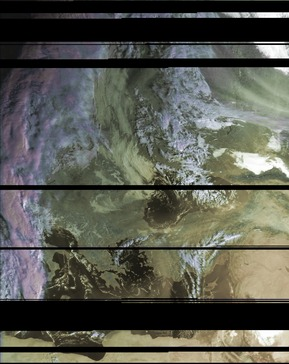
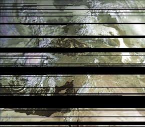
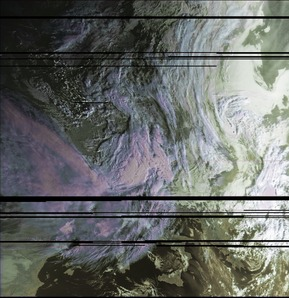

Планета Земля - фотообои метеоснимков из космоса с Метеор-М2
погода 2021_02_22 и 23 февраля
у нас сугробы по шею...
картинки LRPT всего пролёта ОГРОМНЫЕ.
Кликайте и разглядывайте всю европу :)))

погода 2021_02_09 LRPT
А вот и фронт циклона Wolker - эт циклон всю Германию остановил в пробках
ну и у нас насыпал рекордно!!!
...а Бухаресту он по барабану - там погодных аномалий ни-ни... (см. правый снимок с Метеор-М2 -
там города помечены)


свежачок 2021_01_31 LRPT
розовым подсвечены облака с t ниже -50С
Справо - турция и чёрное море, снега нет в Крыму(п.с. скоро так там
насыпет!!), зато видно где он есть! :-)))
и следы от самолётов над морем видны.

ну и до кучи
Погода с Метеор-М2 за пару дней.
Фотки неуменьшались и нередактировались.
(кликабельно w2896pix h~3000pix)



И такое поймать может каждый! Без тарелки! :-)))
снимки погоды проф. чёткости
поклон и огромное СПАСИБО МетеоРу